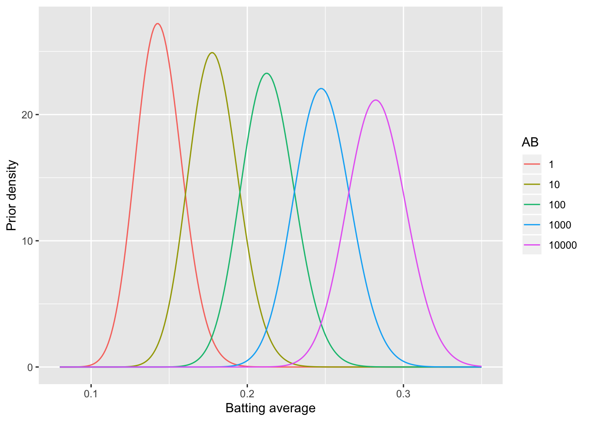
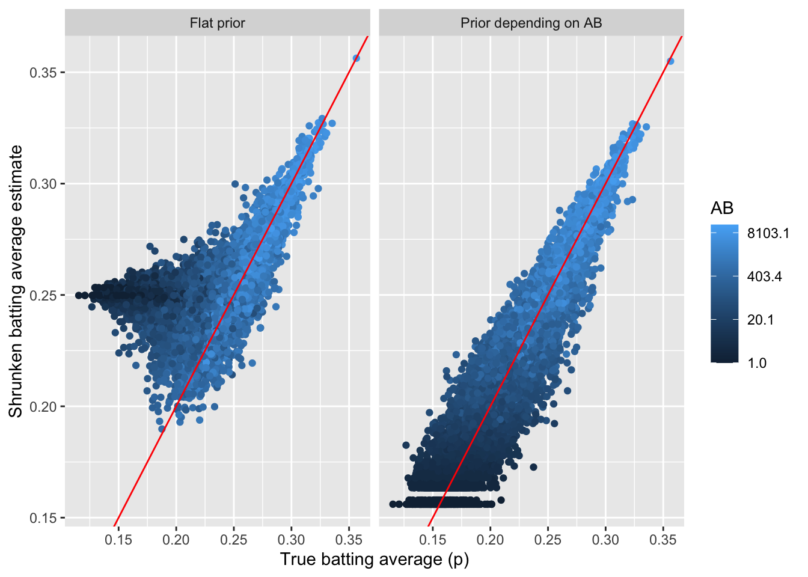

第10章 贝叶斯统计
10.1 贝塔分布
贝塔分布的本质是概率分布的分布
棒球击球率的预测问题，你不可能预测一个刚打出本垒下一个也击中，会有一个先验概率
这个概率可以用一个参数 \(\alpha\) 与 \(\beta\) 的贝塔分布来描述，例如一共打了300个球，81个击中，219个击空，那么 \(\alpha\) 为81，\(\beta\) 为219
均值为\(\frac{\alpha}{\alpha + \beta} = \frac{81}{81+219} = 0.27\)
概率密度分布图，从图上我们可以看出一个大约在0.2-0.35的概率区间，表示击球的先验概率空间可能的取值
library(ggplot2)
x <- seq(0,1,length=100)
db <- dbeta(x, 81, 219)
ggplot() + geom_line(aes(x,db)) + ylab("Density of beta")
10.2 为什么击球的概率分布符合贝塔分布？
- 设想球员A打了一个球打中了，那么在没有先验知识的情况下我会认为他击中概率为1
- 这个球员又打中了一个球，那么还是1
- 但第三个没打中，我们会认为他击中概率是0吗？
- 一般而言，这类连续击球问题可以用二项分布来描述，例如10个球打中8个的概率，我们假设这个击球概率为q，那么这个概率应该是个q的函数：
\[f(q) \propto q^a(1-q)^b\]
- q对于一个实际问题是确定的常数，所以出现这个场景的概率实际上是a与b的函数
- 为了保障这个概率函数累积为1，需要除一个跟a与b有关的数
- 这个数可以用贝塔函数\(B(a,b)\)来表示，数学证明略
- 如果接着打了一个中了，那么如何更新这个概率？
- 根据贝叶斯公式，最后推导出的结果如下：
\[Beta(\alpha+1,\beta+0)\]
- 那么我们对这个击球率的估计就略高了一点，这是贝塔分布的神奇之处，形式非常简单，理解也很直观
10.3 先验与后验
- 如果我们后续观察的击球少，那么不太容易影响到对概率的先验估计
x <- seq(0,1,length=100)
db <- dbeta(x, 81+1, 219)
ggplot() + geom_line(aes(x,db)) + ylab("Density of beta")
- 如果后续观察了大量的击球都中了，那么概率会偏向后面数据量的那一部分
x <- seq(0,1,length=100)
db <- dbeta(x, 81+1000, 219)
ggplot() + geom_line(aes(x,db)) + ylab("Density of beta")
这是贝叶斯分析的核心思想，通过证据更新经验
最后得到的均值（后验0.83）一定是介于经验值（先验0.27）与证据值（全击中就是1）之间
贝塔分布天然适合描述一个对概率的估计场景
另一种不那么严谨的理解方法是如果一个概率是稳定的，那么多次实验的结果差别不会太大，则有：
\[\frac{a}{b} = \frac{c}{d} = \frac{a+b}{c+d}\]
- 如果每次实验的概率持平，那么不存在不确定度；但如果前面实验的次数少而后面实验的次数多，那么概率会偏重于后面，这就是贝塔分布想说明的事
10.4 经验贝叶斯
对于两个球员，一个打了10个球中了4个，另一个打了1000个球中了300个，一般击中概率0.2，你会选哪一个？
我们对于小样本量的统计推断会有天然的不信任，如何通过统计量来描述？
下面用MLB的数据说明，首先提取出球员的击球数据：
library(dplyr)
library(tidyr)
library(Lahman)
# 拿到击球数据
career <- Batting %>%
filter(AB > 0) %>%
anti_join(Pitching, by = "playerID") %>%
group_by(playerID) %>%
summarize(H = sum(H), AB = sum(AB)) %>%
mutate(average = H / AB)
# 把ID换成球员名字
career <- Master %>%
tbl_df() %>%
dplyr::select(playerID, nameFirst, nameLast) %>%
unite(name, nameFirst, nameLast, sep = " ") %>%
inner_join(career, by = "playerID") %>%
dplyr::select(-playerID)
# 展示数据
career## # A tibble: 9,670 x 4
## name H AB average
## <chr> <int> <int> <dbl>
## 1 Hank Aaron 3771 12364 0.305
## 2 Tommie Aaron 216 944 0.229
## 3 Andy Abad 2 21 0.0952
## 4 John Abadie 11 49 0.224
## 5 Ed Abbaticchio 772 3044 0.254
## 6 Fred Abbott 107 513 0.209
## 7 Jeff Abbott 157 596 0.263
## 8 Kurt Abbott 523 2044 0.256
## 9 Ody Abbott 13 70 0.186
## 10 Frank Abercrombie 0 4 0
## # … with 9,660 more rows| name | H | AB | average |
|---|---|---|---|
| Jeff Banister | 1 | 1 | 1 |
| Doc Bass | 1 | 1 | 1 |
| Steve Biras | 2 | 2 | 1 |
| C. B. Burns | 1 | 1 | 1 |
| Jackie Gallagher | 1 | 1 | 1 |
| name | H | AB | average |
|---|---|---|---|
| Frank Abercrombie | 0 | 4 | 0 |
| Horace Allen | 0 | 7 | 0 |
| Pete Allen | 0 | 4 | 0 |
| Walter Alston | 0 | 1 | 0 |
| Bill Andrus | 0 | 9 | 0 |
如果仅考虑击球率会把很多板凳球员与运气球员包括进来，一个先验概率分布很有必要
那么考虑下如何得到，经验贝叶斯方法认为如果估计一个个体的参数，那么这个个体所在的整体的概率分布可作为先验概率分布
这个先验概率分布可以直接从数据中得到，然后我们要用极大似然或矩估计的方法拿到贝塔分布的两个参数：
career_filtered <- career %>%
filter(AB >= 500)
m <- MASS::fitdistr(career_filtered$average, dbeta,
start = list(shape1 = 1, shape2 = 10))
alpha0 <- m$estimate[1]
beta0 <- m$estimate[2]
# 看下拟合效果
ggplot(career_filtered) +
geom_histogram(aes(average, y = ..density..), binwidth = .005) +
stat_function(fun = function(x) dbeta(x, alpha0, beta0), color = "red",
size = 1) +
xlab("Batting average")
10.5 从整体到个人
当我们估计个人的击球率时，整体可以作为先验函数，个人的数据可以通过贝塔分布更新到个体
那么如果一个人数据少，我们倾向于认为他是平均水平；数据多则认为符合个人表现
这事实上是一个分层结构，经验贝叶斯推断里隐含了这么一个从整体到个人的过程
career_eb <- career %>%
mutate(eb_estimate = (H + alpha0) / (AB + alpha0 + beta0))
# 击球率高
career_eb %>%
arrange(desc(eb_estimate)) %>%
head(5) %>%
kable()| name | H | AB | average | eb_estimate |
|---|---|---|---|---|
| Rogers Hornsby | 2930 | 8173 | 0.358 | 0.355 |
| Shoeless Joe Jackson | 1772 | 4981 | 0.356 | 0.350 |
| Ed Delahanty | 2597 | 7510 | 0.346 | 0.342 |
| Billy Hamilton | 2164 | 6283 | 0.344 | 0.340 |
| Harry Heilmann | 2660 | 7787 | 0.342 | 0.338 |
| name | H | AB | average | eb_estimate |
|---|---|---|---|---|
| Bill Bergen | 516 | 3028 | 0.170 | 0.179 |
| Ray Oyler | 221 | 1265 | 0.175 | 0.191 |
| John Vukovich | 90 | 559 | 0.161 | 0.196 |
| John Humphries | 52 | 364 | 0.143 | 0.196 |
| George Baker | 74 | 474 | 0.156 | 0.196 |
# 整体估计
ggplot(career_eb, aes(average, eb_estimate, color = AB)) +
geom_hline(yintercept = alpha0 / (alpha0 + beta0), color = "red", lty = 2) +
geom_point() +
geom_abline(color = "red") +
scale_colour_gradient(trans = "log", breaks = 10 ^ (1:5)) +
xlab("Batting average") +
ylab("Empirical Bayes batting average")
数据点多会收缩到\(x=y\)，也就是个人的击球率；数据点少则回归到整体击球率
这就是经验贝叶斯方法的全貌：先估计整体的参数，然后把整体参数作为先验概率估计个人参数
10.6 可信区间与置信区间
经验贝叶斯可以给出点估计，但现实中我们可能更关心区间估计
一般这类区间估计可以用二项式比例估计来进行，不过没有先验经验的限制置信区间大到没意义
经验贝叶斯会给出一个后验分布，这个分布可以用来求可信区间
library(broom)
# 给出后验分布
career <- Batting %>%
filter(AB > 0) %>%
anti_join(Pitching, by = "playerID") %>%
group_by(playerID) %>%
summarize(H = sum(H), AB = sum(AB)) %>%
mutate(average = H / AB)
career <- Master %>%
tbl_df() %>%
dplyr::select(playerID, nameFirst, nameLast) %>%
unite(name, nameFirst, nameLast, sep = " ") %>%
inner_join(career, by = "playerID")
career0 <- Batting %>%
filter(AB > 0) %>%
anti_join(Pitching, by = "playerID") %>%
group_by(playerID) %>%
summarize(H = sum(H), AB = sum(AB), year = mean(yearID)) %>%
mutate(average = H / AB)
career2 <- Master %>%
tbl_df() %>%
dplyr::select(playerID, nameFirst, nameLast, bats) %>%
unite(name, nameFirst, nameLast, sep = " ") %>%
inner_join(career0, by = "playerID")
career_eb <- career %>%
mutate(eb_estimate = (H + alpha0) / (AB + alpha0 + beta0))
career_eb <- career_eb %>%
mutate(alpha1 = H + alpha0,
beta1 = AB - H + beta0)
# 提取洋基队的数据
yankee_1998 <- c("brosisc01", "jeterde01", "knoblch01", "martiti02", "posadjo01", "strawda01", "willibe02")
yankee_1998_career <- career_eb %>%
filter(playerID %in% yankee_1998)
# 提取可信区间
yankee_1998_career <- yankee_1998_career %>%
mutate(low = qbeta(.025, alpha1, beta1),
high = qbeta(.975, alpha1, beta1))
yankee_1998_career %>%
dplyr::select(-alpha1, -beta1, -eb_estimate) %>%
knitr::kable()| playerID | name | H | AB | average | low | high |
|---|---|---|---|---|---|---|
| brosisc01 | Scott Brosius | 1001 | 3889 | 0.257 | 0.244 | 0.271 |
| jeterde01 | Derek Jeter | 3465 | 11195 | 0.310 | 0.300 | 0.317 |
| knoblch01 | Chuck Knoblauch | 1839 | 6366 | 0.289 | 0.277 | 0.298 |
| martiti02 | Tino Martinez | 1925 | 7111 | 0.271 | 0.260 | 0.280 |
| posadjo01 | Jorge Posada | 1664 | 6092 | 0.273 | 0.262 | 0.283 |
| strawda01 | Darryl Strawberry | 1401 | 5418 | 0.259 | 0.247 | 0.270 |
| willibe02 | Bernie Williams | 2336 | 7869 | 0.297 | 0.286 | 0.305 |
# 绘制可信区间
yankee_1998_career %>%
mutate(name = reorder(name, average)) %>%
ggplot(aes(average, name)) +
geom_point() +
geom_errorbarh(aes(xmin = low, xmax = high)) +
geom_vline(xintercept = alpha0 / (alpha0 + beta0), color = "red", lty = 2) +
xlab("Estimated batting average (w/ 95% interval)") +
ylab("Player")
# 对比置信区间与可信区间
career_eb <- career_eb %>%
mutate(low = qbeta(.025, alpha1, beta1),
high = qbeta(.975, alpha1, beta1))
set.seed(2016)
some <- career_eb %>%
sample_n(20) %>%
mutate(name = paste0(name, " (", H, "/", AB, ")"))
frequentist <- some %>%
group_by(playerID, name, AB) %>%
do(tidy(binom.test(.$H, .$AB))) %>%
dplyr::select(playerID, name, estimate, low = conf.low, high = conf.high) %>%
mutate(method = "Confidence")
bayesian <- some %>%
dplyr::select(playerID, name, AB, estimate = eb_estimate,
low = low, high = high) %>%
mutate(method = "Credible")
combined <- bind_rows(frequentist, bayesian)
combined %>%
mutate(name2 = reorder(name, -AB)) %>%
ggplot(aes(estimate, name2, color = method, group = method)) +
geom_point() +
geom_errorbarh(aes(xmin = low, xmax = high)) +
geom_vline(xintercept = alpha0 / (alpha0 + beta0), color = "red", lty = 2) +
xlab("Estimated batting average") +
ylab("Player") +
labs(color = "")
- 可信区间与置信区间很大的区别在于前者考虑了先验概率进而实现了区间的收缩，后者则可看作无先验贝塔分布给出的区间估计，频率学派目前没有很好的收缩区间估计的方法
10.7 后验错误率
- 现实问题经常不局限于估计，而是侧重决策，例如如果一个球员的击球率高于某个值，他就可以进入名人堂（击球率大于0.3），这个决策常常伴随区间估计而不是简单的点估计
# 以 Hank Aaron 为例
career_eb %>%
filter(name == "Hank Aaron") %>%
do(data_frame(x = seq(.27, .33, .0002),
density = dbeta(x, .$alpha1, .$beta1))) %>%
ggplot(aes(x, density)) +
geom_line() +
geom_ribbon(aes(ymin = 0, ymax = density * (x < .3)),
alpha = .1, fill = "red") +
geom_vline(color = "red", lty = 2, xintercept = .3)
## # A tibble: 1 x 10
## playerID name H AB average eb_estimate alpha1 beta1 low high
## <chr> <chr> <int> <int> <dbl> <dbl> <dbl> <dbl> <dbl> <dbl>
## 1 aaronha01 Hank Aaron 3771 12364 0.305 0.304 3851. 8821. 0.296 0.312## [1] 0.169后验错误率（Posterior Error Probability）可类比经典假设检验中的显著性水平\(\alpha\)
后验包括率（Posterior Inclusion Probability）可类比经典假设检验中的置信水平\(1-\alpha\)
# 所有球员的后验错误率分布，大部分不超过0.3
career_eb <- career_eb %>%
mutate(PEP = pbeta(.3, alpha1, beta1))
ggplot(career_eb, aes(PEP)) +
geom_histogram(binwidth = .02) +
xlab("Posterior Error Probability (PEP)") +
xlim(0, 1)
# 后验错误率与击球率的关系
career_eb %>%
ggplot(aes(eb_estimate, PEP, color = AB)) +
geom_point(size = 1) +
xlab("(Shrunken) batting average estimate") +
ylab("Posterior Error Probability (PEP)") +
geom_vline(color = "red", lty = 2, xintercept = .3) +
scale_colour_gradient(trans = "log", breaks = 10 ^ (1:5))
- 后验错误率高于0.3的多数是击球率与击球数都高的人，因为贝叶斯方法惩罚了击球数低的人
10.8 错误发现率
错误发现率（FDR）可用来控制一个整体决策，保证整体犯错的概率低于某个数值，错误发现率越高，越可能把假阳性包括进来
假如我们把进入名人堂的决策作为一个整体，则可允许一定的整体错误率，因为每个人的后验错误率可以计算且期望值线性可加和，我们可以得到一个整体的错误率
## [1] 5.17## [1] 0.0517## [1] 0.00189## [1] 0.25- 错误率在排序后前面低后面高，但这个错误率不特指某个球员，而是包含到某个球员的整体犯错的概率
10.9 q值
- q值定义为排序后累积到某个样本的整体平均错误率，类似多重比较中对整体错误率控制的p值
# 生成每个球员的q值
career_eb <- career_eb %>%
arrange(PEP) %>%
mutate(qvalue = cummean(PEP))
# 观察不同q值对名人堂球员数的影响
career_eb %>%
ggplot(aes(qvalue, rank(PEP))) +
geom_line() +
xlab("q-value cutoff") +
ylab("Number of players included")
# 观察小q值部分
career_eb %>%
filter(qvalue < .25) %>%
ggplot(aes(qvalue, rank(PEP))) +
geom_line() +
xlab("q-value cutoff") +
ylab("Number of players included")
200个人进入名人堂可能有约1/4的球员不合适，如果是50个人进入名人堂那么基本不会犯错
q值是一个整体而非个体的平均错误率，具有累积性，不代表q值大的那一个就是错的
q值在频率学派的多重比较里也有定义，虽然没有空假设（有先验概率），但实质等同
10.10 贝叶斯视角的假设检验
前面描述的是击球率如何求，如何进行区间估计与多个体的错误率控制，面向的个体或整体，那么如何解决比较问题
设想多个球员，我们考虑如何去比较他们击球率。如果两个球员击球率的概率密度曲线比较接近，那么即便均值有不同我们也无法进行区分；如果重叠比较少，那么我们有理由认为他们之间的差异显著
贝叶斯视角下如何定量描述这个差异是否显著？
10.10.1 模拟验证
- 单纯取样比大小然后计算比例
# 提取两人数据
aaron <- career_eb %>% filter(name == "Hank Aaron")
piazza <- career_eb %>% filter(name == "Mike Piazza")
# 模拟取样10万次
piazza_simulation <- rbeta(1e6, piazza$alpha1, piazza$beta1)
aaron_simulation <- rbeta(1e6, aaron$alpha1, aaron$beta1)
# 计算一个人超过另一个人的概率
sim <- mean(piazza_simulation > aaron_simulation)
sim## [1] 0.60510.10.2 数值积分
- 两个概率的联合概率分布，然后积分一个队员大于另一个的概率
d <- .00002
limits <- seq(.29, .33, d)
sum(outer(limits, limits, function(x, y) {
(x > y) *
dbeta(x, piazza$alpha1, piazza$beta1) *
dbeta(y, aaron$alpha1, aaron$beta1) *
d ^ 2
}))## [1] 0.60410.10.3 解析解
- 两个贝塔分布一个比另一个高是有含有贝塔函数的解析解的：
\[p_A \sim \mbox{Beta}(\alpha_A, \beta_A)\]
\[p_B \sim \mbox{Beta}(\alpha_B, \beta_B)\]
\[{\rm Pr}(p_B > p_A) = \sum_{i=0}^{\alpha_B-1}\frac{B(\alpha_A+i,\beta_A+\beta_B)}{(\beta_B+i) B(1+i, \beta_B) B(\alpha_A, \beta_A) }\]
h <- function(alpha_a, beta_a,
alpha_b, beta_b) {
j <- seq.int(0, round(alpha_b) - 1)
log_vals <- (lbeta(alpha_a + j, beta_a + beta_b) - log(beta_b + j) -
lbeta(1 + j, beta_b) - lbeta(alpha_a, beta_a))
1 - sum(exp(log_vals))
}
h(piazza$alpha1, piazza$beta1,
aaron$alpha1, aaron$beta1)## [1] 0.60310.10.4 正态近似求解
- 贝塔分布在\(\alpha\)与\(\beta\)比较大时接近正态分布，可以直接用正态分布的解析解求，速度快很多
h_approx <- function(alpha_a, beta_a,
alpha_b, beta_b) {
u1 <- alpha_a / (alpha_a + beta_a)
u2 <- alpha_b / (alpha_b + beta_b)
var1 <- alpha_a * beta_a / ((alpha_a + beta_a) ^ 2 * (alpha_a + beta_a + 1))
var2 <- alpha_b * beta_b / ((alpha_b + beta_b) ^ 2 * (alpha_b + beta_b + 1))
pnorm(0, u2 - u1, sqrt(var1 + var2))
}
h_approx(piazza$alpha1, piazza$beta1, aaron$alpha1, aaron$beta1)## [1] 0.60510.11 比例检验
- 这是个列联表问题，频率学派对比两个比例
two_players <- bind_rows(aaron, piazza)
two_players %>%
transmute(Player = name, Hits = H, Misses = AB - H) %>%
knitr::kable()| Player | Hits | Misses |
|---|---|---|
| Hank Aaron | 3771 | 8593 |
| Mike Piazza | 2127 | 4784 |
##
## 2-sample test for equality of proportions with continuity correction
##
## data: two_players$H out of two_players$AB
## X-squared = 0.1, df = 1, p-value = 0.7
## alternative hypothesis: two.sided
## 95 percent confidence interval:
## -0.0165 0.0109
## sample estimates:
## prop 1 prop 2
## 0.305 0.308- 贝叶斯学派对比两个比例
credible_interval_approx <- function(a, b, c, d) {
u1 <- a / (a + b)
u2 <- c / (c + d)
var1 <- a * b / ((a + b) ^ 2 * (a + b + 1))
var2 <- c * d / ((c + d) ^ 2 * (c + d + 1))
mu_diff <- u2 - u1
sd_diff <- sqrt(var1 + var2)
data_frame(posterior = pnorm(0, mu_diff, sd_diff),
estimate = mu_diff,
conf.low = qnorm(.025, mu_diff, sd_diff),
conf.high = qnorm(.975, mu_diff, sd_diff))
}
credible_interval_approx(piazza$alpha1, piazza$beta1, aaron$alpha1, aaron$beta1)## # A tibble: 1 x 4
## posterior estimate conf.low conf.high
## <dbl> <dbl> <dbl> <dbl>
## 1 0.605 -0.00181 -0.0151 0.0115- 多个球员对比一个
set.seed(2016)
intervals <- career_eb %>%
filter(AB > 10) %>%
sample_n(20) %>%
group_by(name, H, AB) %>%
do(credible_interval_approx(piazza$alpha1, piazza$beta1, .$alpha1, .$beta1)) %>%
ungroup() %>%
mutate(name = reorder(paste0(name, " (", H, " / ", AB, ")"), -estimate))
f <- function(H, AB) broom::tidy(prop.test(c(H, piazza$H), c(AB, piazza$AB)))
prop_tests <- purrr::map2_df(intervals$H, intervals$AB, f) %>%
mutate(estimate = estimate1 - estimate2,
name = intervals$name)
all_intervals <- bind_rows(
mutate(intervals, type = "Credible"),
mutate(prop_tests, type = "Confidence")
)
ggplot(all_intervals, aes(x = estimate, y = name, color = type)) +
geom_point() +
geom_errorbarh(aes(xmin = conf.low, xmax = conf.high)) +
xlab("Piazza average - player average") +
ylab("Player")
- 置信区间与可信区间的主要差异来自于经验贝叶斯的区间收敛
10.12 错误率控制
如果我打算交易一个球员，那么如何筛选候选人？
先选那些击球率更好的球员
# 对比打算交易的球员与其他球员
career_eb_vs_piazza <- bind_cols(
career_eb,
credible_interval_approx(piazza$alpha1, piazza$beta1,
career_eb$alpha1, career_eb$beta1)) %>%
dplyr::select(name, posterior, conf.low, conf.high)
career_eb_vs_piazza## # A tibble: 9,670 x 4
## name posterior conf.low conf.high
## <chr> <dbl> <dbl> <dbl>
## 1 Rogers Hornsby 2.84e-11 0.0345 0.0639
## 2 Ed Delahanty 7.52e- 7 0.0217 0.0517
## 3 Shoeless Joe Jackson 8.89e- 8 0.0278 0.0611
## 4 Willie Keeler 4.62e- 6 0.0183 0.0472
## 5 Nap Lajoie 1.55e- 5 0.0159 0.0441
## 6 Tony Gwynn 1.83e- 5 0.0157 0.0442
## 7 Harry Heilmann 7.19e- 6 0.0180 0.0476
## 8 Lou Gehrig 1.43e- 5 0.0167 0.0461
## 9 Billy Hamilton 6.47e- 6 0.0191 0.0504
## 10 Eddie Collins 1.99e- 4 0.0113 0.0393
## # … with 9,660 more rows# 计算q值
career_eb_vs_piazza <- career_eb_vs_piazza %>%
arrange(posterior) %>%
mutate(qvalue = cummean(posterior))
# 筛选那些q值小于0.05的
better <- career_eb_vs_piazza %>%
filter(qvalue < .05)
better## # A tibble: 48 x 5
## name posterior conf.low conf.high qvalue
## <chr> <dbl> <dbl> <dbl> <dbl>
## 1 Rogers Hornsby 2.84e-11 0.0345 0.0639 2.84e-11
## 2 Shoeless Joe Jackson 8.89e- 8 0.0278 0.0611 4.45e- 8
## 3 Ed Delahanty 7.52e- 7 0.0217 0.0517 2.80e- 7
## 4 Willie Keeler 4.62e- 6 0.0183 0.0472 1.36e- 6
## 5 Billy Hamilton 6.47e- 6 0.0191 0.0504 2.39e- 6
## 6 Harry Heilmann 7.19e- 6 0.0180 0.0476 3.19e- 6
## 7 Lou Gehrig 1.43e- 5 0.0167 0.0461 4.78e- 6
## 8 Nap Lajoie 1.55e- 5 0.0159 0.0441 6.12e- 6
## 9 Tony Gwynn 1.83e- 5 0.0157 0.0442 7.47e- 6
## 10 Bill Terry 3.04e- 5 0.0162 0.0472 9.77e- 6
## # … with 38 more rows- 这样我们筛到一个可交易的群体，总和错误率不超过5%
10.13 影响因子
- 击球率高除了能力影响外还有可能是因为得到的机会多或者光环效应，例如一开始凭运气打得好，后面给机会多，通过经验累积提高了击球率
career %>%
filter(AB >= 20) %>%
ggplot(aes(AB, average)) +
geom_point() +
geom_smooth(method = "lm", se = FALSE) +
scale_x_log10()
击球数低方差会大，这比较正常，很多人挂在起跑线上了
直接使用经验贝叶斯方法会导致整体向均值收敛，这高估了新手的数据
prior_mu <- alpha0 / (alpha0 + beta0)
career_eb %>%
filter(AB >= 20) %>%
gather(type, value, average, eb_estimate) %>%
mutate(type = plyr::revalue(type, c(average = "Raw",
eb_estimate = "With EB Shrinkage"))) %>%
ggplot(aes(AB, value)) +
geom_point() +
scale_x_log10() +
geom_hline(color = "red", lty = 2, size = 1.5, yintercept = prior_mu) +
facet_wrap(~type) +
ylab("average") +
geom_smooth(method = "lm")
为了如实反应这种情况，我们应该认为击球率符合贝塔分布，但同时贝塔分布的两个参数受击球数的影响，击球数越多，越可能击中
这个模型可以用贝塔－二项式回归来描述
\[\mu_i = \mu_0 + \mu_{\mbox{AB}} \cdot \log(\mbox{AB})\]
\[\alpha_{0,i} = \mu_i / \sigma_0\]
\[\beta_{0,i} = (1 - \mu_i) / \sigma_0\]
\[p_i \sim \mbox{Beta}(\alpha_{0,i}, \beta_{0,i})\]
\[H_i \sim \mbox{Binom}(\mbox{AB}_i, p_i)\]
10.13.1 拟合模型
- 寻找拟合后的模型参数，构建新的先验概率
library(gamlss)
# 拟合模型
fit <- gamlss(cbind(H, AB - H) ~ log(AB),
data = career_eb,
family = BB(mu.link = "identity"))## GAMLSS-RS iteration 1: Global Deviance = 94587
## GAMLSS-RS iteration 2: Global Deviance = 74795
## GAMLSS-RS iteration 3: Global Deviance = 70515
## GAMLSS-RS iteration 4: Global Deviance = 70509
## GAMLSS-RS iteration 5: Global Deviance = 70509## # A tibble: 3 x 6
## parameter term estimate std.error statistic p.value
## <chr> <chr> <dbl> <dbl> <dbl> <dbl>
## 1 mu (Intercept) 0.144 0.00158 91.0 0
## 2 mu log(AB) 0.0151 0.000216 70.0 0
## 3 sigma (Intercept) -6.35 0.0246 -258. 0# 构建新的先验概率
mu_0 <- td$estimate[1]
mu_AB <- td$estimate[2]
sigma <- exp(td$estimate[3])
# 看看AB对先验概率的影响
crossing(x = seq(0.08, .35, .001), AB = c(1, 10, 100, 1000, 10000)) %>%
mutate(density = dbeta(x, (mu_0 + mu_AB * log(AB)) / sigma,
(1 - (mu_0 + mu_AB * log(AB))) / sigma)) %>%
mutate(AB = factor(AB)) %>%
ggplot(aes(x, density, color = AB, group = AB)) +
geom_line() +
xlab("Batting average") +
ylab("Prior density")
10.13.2 求后验概率
# 计算所有拟合值
mu <- fitted(fit, parameter = "mu")
sigma <- fitted(fit, parameter = "sigma")
# 计算所有后验概率
career_eb_wAB <- career_eb %>%
dplyr::select(name, H, AB, original_eb = eb_estimate) %>%
mutate(mu = mu,
alpha0 = mu / sigma,
beta0 = (1 - mu) / sigma,
alpha1 = alpha0 + H,
beta1 = beta0 + AB - H,
new_eb = alpha1 / (alpha1 + beta1))
# 展示拟合后的击球率
ggplot(career_eb_wAB, aes(original_eb, new_eb, color = AB)) +
geom_point() +
geom_abline(color = "red") +
xlab("Original EB Estimate") +
ylab("EB Estimate w/ AB term") +
scale_color_continuous(trans = "log", breaks = 10 ^ (0:4))
# 对比
library(tidyr)
lev <- c(raw = "Raw H / AB", original_eb = "EB Estimate", new_eb = "EB w/ Regression")
career_eb_wAB %>%
filter(AB >= 10) %>%
mutate(raw = H / AB) %>%
gather(type, value, raw, original_eb, new_eb) %>%
mutate(mu = ifelse(type == "original_eb", prior_mu,
ifelse(type == "new_eb", mu, NA))) %>%
mutate(type = factor(plyr::revalue(type, lev), lev)) %>%
ggplot(aes(AB, value)) +
geom_point() +
geom_line(aes(y = mu), color = "red") +
scale_x_log10() +
facet_wrap(~type) +
xlab("At-Bats (AB)") +
ylab("Estimate")
- 矫正后我们的数据更复合现实了，其实这是贝叶斯分层模型的一个简单版本，通过考虑更多因素，我们可以构建更复杂的模型来挖掘出我们所需要的信息
10.13.3 考虑更多因素
- 现在我们听说左利手跟右利手的表现可能不一样，所以我们要对模型进行完善，考虑把左右手参数加入模型
## # A tibble: 4 x 2
## bats n
## <fct> <int>
## 1 B 788
## 2 L 2740
## 3 R 5486
## 4 <NA> 656# 排除NA
career3 <- career2 %>%
filter(!is.na(bats)) %>%
mutate(bats = relevel(bats, "R"))
# 重建模型
fit2 <- gamlss(cbind(H, AB - H) ~ log(AB) + bats,
data = career3,
family = BB(mu.link = "identity"))## GAMLSS-RS iteration 1: Global Deviance = 90843
## GAMLSS-RS iteration 2: Global Deviance = 71587
## GAMLSS-RS iteration 3: Global Deviance = 67295
## GAMLSS-RS iteration 4: Global Deviance = 67289
## GAMLSS-RS iteration 5: Global Deviance = 67289## # A tibble: 5 x 6
## parameter term estimate std.error statistic p.value
## <chr> <chr> <dbl> <dbl> <dbl> <dbl>
## 1 mu (Intercept) 0.142 0.00162 87.6 0.
## 2 mu log(AB) 0.0150 0.000219 68.3 0.
## 3 mu batsB -0.00158 0.000982 -1.61 1.07e- 1
## 4 mu batsL 0.00953 0.000630 15.1 5.11e-51
## 5 sigma (Intercept) -6.43 0.0251 -256. 0.sigma <- fitted(fit2, "sigma")[1]
crossing(bats = c("L", "R"),
AB = c(1, 10, 100, 1000, 10000)) %>%
augment(fit2, newdata = .) %>%
rename(mu = .fitted) %>%
crossing(x = seq(.1, .36, .0005)) %>%
mutate(alpha = mu / sigma,
beta = (1 - mu) / sigma,
density = dbeta(x, alpha, beta)) %>%
ggplot(aes(x, density, color = factor(AB), lty = bats)) +
geom_line() +
labs(x = "Batting average",
y = "Prior density",
color = "AB",
lty = "Batting hand")
- 存在先验概率的情况下，可以考虑考察随着击球数增长左右手的不同
crossing(bats = c("L", "R"),
AB = c(10, 100, 1000, 10000)) %>%
augment(fit2, newdata = .) %>%
mutate(H = .3 * AB,
alpha0 = .fitted / sigma,
beta0 = (1 - .fitted) / sigma,
alpha1 = alpha0 + H,
beta1 = beta0 + AB - H,
estimate = alpha1 / (alpha1 + beta1),
conf.low = qbeta(.025, alpha1, beta1),
conf.high = qbeta(.975, alpha1, beta1),
record = paste(H, AB, sep = " / ")) %>%
ggplot(aes(estimate, record, color = bats)) +
geom_point() +
geom_errorbarh(aes(xmin = conf.low, xmax = conf.high)) +
labs(x = "Estimate w/ 95% credible interval",
y = "Batting record",
color = "Batting hand")
- 另一个要考虑的因素是不同年份的平均击球率可能也有起伏
career3 %>%
mutate(decade = factor(round(year - 5, -1))) %>%
filter(AB >= 500) %>%
ggplot(aes(decade, average)) +
geom_boxplot() +
theme(axis.text.x = element_text(angle = 90, hjust = 1)) +
ylab("Batting average")
# 用样条插值来进行拟合
library(splines)
fit3 <- gamlss(cbind(H, AB - H) ~ 0 + ns(year, df = 5) + bats + log(AB),
data = career3,
family = BB(mu.link = "identity"))
# 观察在击球数1000上先验概率的变化
plot_gamlss_fit <- function(f) {
career3 %>%
dplyr::select(year, bats) %>%
distinct() %>%
filter(bats != "B") %>%
mutate(AB = 1000) %>%
augment(f, newdata = .) %>%
rename(mu = .fitted) %>%
mutate(sigma = fitted(fit3, "sigma")[1],
alpha0 = mu / sigma,
beta0 = (1 - mu) / sigma,
conf_low = qbeta(.025, alpha0, beta0),
conf_high = qbeta(.975, alpha0, beta0)) %>%
ggplot(aes(year, mu, color = bats, group = bats)) +
geom_line() +
geom_ribbon(aes(ymin = conf_low, ymax = conf_high), linetype = 2, alpha = .1) +
labs(x = "Year",
y = "Prior distribution (median + 95% quantiles)",
color = "Batting hand")
}
plot_gamlss_fit(fit3)- 同时另一个问题是这些因素会交互影响
fit4 <- gamlss(cbind(H, AB - H) ~ 0 + ns(year, 5) * bats + log(AB),
data = career3,
family = BB(mu.link = "identity"))
plot_gamlss_fit(fit4)
Pitching %>%
dplyr::select(playerID, yearID, GS) %>%
distinct() %>%
inner_join(dplyr::select(Master, playerID, throws)) %>%
count(yearID, throws, wt = GS) %>%
filter(!is.na(throws)) %>%
mutate(percent = n / sum(n)) %>%
filter(throws == "L") %>%
ggplot(aes(yearID, percent)) +
geom_line() +
geom_smooth() +
scale_y_continuous(labels = scales::percent_format()) +
xlab("Year") +
ylab("% of games with left-handed pitcher")- 左右手之间的差距伴随年份在逐渐减少
players <- crossing(year = c(1915, 1965, 2015),
bats = c("L", "R"),
H = 30,
AB = 100)
players_posterior <- players %>%
mutate(mu = predict(fit4, what = "mu", newdata = players),
sigma = predict(fit4, what = "sigma", newdata = players, type = "response"),
alpha0 = mu / sigma,
beta0 = (1 - mu) / sigma,
alpha1 = alpha0 + H,
beta1 = beta0 + AB - H)
players_posterior %>%
crossing(x = seq(.15, .3, .001)) %>%
mutate(density = dbeta(x, alpha1, beta1)) %>%
ggplot(aes(x, density, color = bats)) +
geom_line() +
facet_wrap(~ year) +
xlab("Batting average") +
ylab("Posterior density") +
ggtitle("Posterior distributions for batters with 30 / 100")- 经验贝叶斯对先验概率的估计类似频率学派，但进行的又是贝叶斯分析
10.14 混合概率模型
- 用击球概率为例，击球手跟非击球手的概率分布是不一样的，那么实际看到的总体球员概率分布应该是一个混合在一起的两个独立分布
# 找出投球3次以上的人
pitchers <- Pitching %>%
group_by(playerID) %>%
summarize(gamesPitched = sum(G)) %>%
filter(gamesPitched > 3)
# 参考上一章节的发现找出击球率稳定的选手
career <- Batting %>%
filter(AB > 0, lgID == "NL", yearID >= 1980) %>%
group_by(playerID) %>%
summarize(H = sum(H), AB = sum(AB), year = mean(yearID)) %>%
mutate(average = H / AB,
isPitcher = playerID %in% pitchers$playerID)
# 链接上名字
career <- Master %>%
tbl_df() %>%
dplyr::select(playerID, nameFirst, nameLast, bats) %>%
unite(name, nameFirst, nameLast, sep = " ") %>%
inner_join(career, by = "playerID")10.14.1 期望最大算法
- 将一个分布拆成两个，可以使用期望最大算法
set.seed(2017)
# 先随机分为两组
starting_data <- career %>%
filter(AB >= 20) %>%
dplyr::select(-year, -bats, -isPitcher) %>%
mutate(cluster = factor(sample(c("A", "B"), n(), replace = TRUE)))
# 观察效果
starting_data %>%
ggplot(aes(average, color = cluster)) +
geom_density()
library(VGAM)
fit_bb_mle <- function(x, n) {
# dbetabinom.ab 是用n、alpha与beta作为参数的二项贝塔分布的似然度函数
ll <- function(alpha, beta) {
-sum(dbetabinom.ab(x, n, alpha, beta, log = TRUE))
}
m <- stats4::mle(ll, start = list(alpha = 3, beta = 10), method = "L-BFGS-B",
lower = c(0.001, .001))
ab <- stats4::coef(m)
data_frame(alpha = ab[1], beta = ab[2], number = length(x))
}
# 看下初始参数
fit_bb_mle(starting_data$H, starting_data$AB)## # A tibble: 1 x 3
## alpha beta number
## <dbl> <dbl> <int>
## 1 12.4 44.5 3615# 看下随机分拆后的参数并生成各分组样本数的先验概率
fits <- starting_data %>%
group_by(cluster) %>%
do(fit_bb_mle(.$H, .$AB)) %>%
ungroup() %>%
mutate(prior = number / sum(number))
fits## # A tibble: 2 x 5
## cluster alpha beta number prior
## <fct> <dbl> <dbl> <int> <dbl>
## 1 A 12.6 45.0 1764 0.488
## 2 B 12.2 44.0 1851 0.512- 算法优化的期望是将这两个分布分拆开，前面一次分拆已经产生微弱差异，下面就通过贝叶斯思想对数据更新这个差异重新分组让两者分开
assignments <- starting_data %>%
dplyr::select(-cluster) %>%
crossing(fits) %>%
mutate(likelihood = prior * VGAM::dbetabinom.ab(H, AB, alpha, beta)) %>%
group_by(playerID) %>%
top_n(1, likelihood) %>%
ungroup()
# 去除掉原有分组，根据更新的后验概率重新分组
assignments## # A tibble: 3,615 x 11
## playerID name H AB average cluster alpha beta number prior likelihood
## <chr> <chr> <int> <int> <dbl> <fct> <dbl> <dbl> <int> <dbl> <dbl>
## 1 abbotje01 Jeff Abbott 11 42 0.262 B 12.2 44.0 1851 0.512 0.0455
## 2 abbotji01 Jim Abbott 2 21 0.0952 B 12.2 44.0 1851 0.512 0.0570
## 3 abbotku01 Kurt Abbott 475 1860 0.255 B 12.2 44.0 1851 0.512 0.00140
## 4 abbotky01 Kyle Abbott 3 31 0.0968 B 12.2 44.0 1851 0.512 0.0356
## 5 abercre01 Reggie Abercrombie 86 386 0.223 B 12.2 44.0 1851 0.512 0.00873
## 6 abnersh01 Shawn Abner 110 531 0.207 B 12.2 44.0 1851 0.512 0.00672
## 7 abreubo01 Bobby Abreu 1607 5395 0.298 B 12.2 44.0 1851 0.512 0.000219
## 8 abreuto01 Tony Abreu 129 509 0.253 B 12.2 44.0 1851 0.512 0.00516
## 9 acevejo01 Jose Acevedo 8 101 0.0792 B 12.2 44.0 1851 0.512 0.00293
## 10 aceveju01 Juan Acevedo 6 65 0.0923 B 12.2 44.0 1851 0.512 0.0106
## # … with 3,605 more rows
- 不断重复这个过程，最终分拆数据（其实就是第一步分拆最重要，后面直接收敛了）
set.seed(1987)
iterate_em <- function(state, ...) {
fits <- state$assignments %>%
group_by(cluster) %>%
do(mutate(fit_bb_mle(.$H, .$AB), number = nrow(.))) %>%
ungroup() %>%
mutate(prior = number / sum(number))
assignments <- assignments %>%
dplyr::select(playerID:average) %>%
crossing(fits) %>%
mutate(likelihood = prior * VGAM::dbetabinom.ab(H, AB, alpha, beta)) %>%
group_by(playerID) %>%
top_n(1, likelihood) %>%
ungroup()
list(assignments = assignments,
fits = fits)
}
library(purrr)
# 使用purrr包存储中间结果
iterations <- accumulate(1:5, iterate_em, .init = list(assignments = starting_data))
assignment_iterations <- iterations %>%
map_df("assignments", .id = "iteration")
# 观察收敛过程
assignment_iterations %>%
ggplot(aes(average, fill = cluster)) +
geom_histogram() +
facet_wrap(~ iteration)
fit_iterations <- iterations %>%
map_df("fits", .id = "iteration")
# 两个分布的收敛过程
fit_iterations %>%
crossing(x = seq(.001, .4, .001)) %>%
mutate(density = prior * dbeta(x, alpha, beta)) %>%
ggplot(aes(x, density, color = iteration, group = iteration)) +
geom_line() +
facet_wrap(~ cluster)
10.14.2 分配
- 得到每个选手在两个分布中后验概率后要对其进行分配，这里我们认为拆分出的两个分布其实就是是否是击球手的两个分组，由于两组重叠较多，直接分配会有困难
## # A tibble: 6 x 8
## playerID name bats H AB year average isPitcher
## <chr> <chr> <fct> <int> <int> <dbl> <dbl> <lgl>
## 1 dejesjo01 Jose de Jesus R 11 100 1990. 0.11 TRUE
## 2 mahonmi02 Mike Mahoney R 18 100 2002. 0.18 FALSE
## 3 cancero01 Robinson Cancel R 20 100 2007. 0.2 FALSE
## 4 buschmi01 Mike Busch R 22 100 1996. 0.22 FALSE
## 5 verdual01 Alex Verdugo L 24 100 2018. 0.24 FALSE
## 6 shealry01 Ryan Shealy R 32 100 2006. 0.32 FALSE## # A tibble: 6 x 6
## iteration cluster alpha beta number prior
## <chr> <fct> <dbl> <dbl> <int> <dbl>
## 1 1 A 12.6 45.0 1764 0.488
## 2 1 B 12.2 44.0 1851 0.512
## 3 2 B 12.4 44.5 3615 1
## 4 3 B 12.4 44.5 3615 1
## 5 4 B 12.4 44.5 3615 1
## 6 5 B 12.4 44.5 3615 1## # A tibble: 2 x 6
## iteration cluster alpha beta number prior
## <chr> <fct> <dbl> <dbl> <int> <dbl>
## 1 1 A 12.6 45.0 1764 0.488
## 2 1 B 12.2 44.0 1851 0.512# 观察球员位置
final_parameters %>%
crossing(x = 0:45) %>%
mutate(density = prior * VGAM::dbetabinom.ab(x, 100, alpha, beta)) %>%
ggplot(aes(x, density)) +
geom_line(aes(color = cluster)) +
geom_vline(aes(xintercept = H), data = batter100, lty = 2) +
geom_text(aes(x = H, y = -.022, label = name), data = batter100, hjust = 1, vjust = 1, angle = 270) +
labs(x = "H (out of 100 at-bats)",
y = "Likelihood of this H out of 100 hits")
# 根据贝叶斯理论，我们可以用在A分组的似然度比上两个分组似然度的和得到后验概率
final_parameters %>%
crossing(H = 1:40) %>%
transmute(H, cluster, likelihood = prior * VGAM::dbetabinom.ab(H, 100, alpha, beta)) %>%
spread(cluster, likelihood) %>%
mutate(probabilityA = A /(A + B)) %>%
ggplot(aes(H, probabilityA)) +
geom_line() +
geom_vline(aes(xintercept = H), data = batter100, lty = 2) +
geom_text(aes(x = H, y = 0, label = name), data = batter100, hjust = 1, vjust = 1, angle = 270) +
labs(x = "H (out of 100 at-bats)",
y = "(Likelihood if pitcher) / (Likelihood if pitcher + Likelihood if not)",
title = "Posterior probability a player is in the pitcher cluster")
- 通过构建后验概率，我们可以直接对结果基于概率进行分组
career_likelihoods <- career %>%
filter(AB > 20) %>%
crossing(final_parameters) %>%
mutate(likelihood = prior * VGAM::dbetabinom.ab(H, AB, alpha, beta)) %>%
group_by(playerID) %>%
mutate(posterior = likelihood / sum(likelihood))
career_assignments <- career_likelihoods %>%
top_n(1, posterior) %>%
ungroup()
# 对比这种分组与实际数据的结果
career_assignments %>%
filter(posterior > .8) %>%
count(isPitcher, cluster) %>%
spread(cluster, n)## # A tibble: 1 x 2
## isPitcher `<NA>`
## <lgl> <int>
## 1 NA 0- 这样基于对概率分布的观察，我们可以实现有现实意义的分组，对分组的改进则需要对数据的进一步理解
10.14.3 经验贝叶斯收缩
- 混合模型下前面所做的工作都需要重新考虑
# 观察击球数100选手的后验概率分布
batting_data <- career_likelihoods %>%
ungroup() %>%
filter(AB == 100) %>%
mutate(name = paste0(name, " (", H, "/", AB, ")"),
name = reorder(name, H),
alpha1 = H + alpha,
beta1 = AB - H + beta)
batting_data %>%
crossing(x = seq(0, .4, .001)) %>%
mutate(posterior_density = posterior * dbeta(x, alpha1, beta1)) %>%
group_by(name, x) %>%
summarize(posterior_density = sum(posterior_density)) %>%
ggplot(aes(x, posterior_density, color = name)) +
geom_line(show.legend = FALSE) +
geom_vline(aes(xintercept = average), data = batting_data, lty = 2) +
facet_wrap(~ name) +
labs(x = "Batting average (actual average shown as dashed line)",
y = "Posterior density after updating")
- 此时不太好判断属于哪一分布，可采用后验概率对平均分布进行加权
eb_shrinkage <- career_likelihoods %>%
mutate(shrunken_average = (H + alpha) / (AB + alpha + beta)) %>%
group_by(playerID) %>%
summarize(shrunken_average = sum(posterior * shrunken_average))
# 观察加权分布
eb_shrinkage %>%
inner_join(career) %>%
filter(AB > 50) %>%
gather(type, value, average, shrunken_average) %>%
mutate(type = ifelse(type == "average", "Raw batting average", "Average posterior"),
type = relevel(factor(type), "Raw batting average")) %>%
ggplot(aes(AB, value)) +
geom_point() +
facet_wrap(~ type) +
scale_x_log10() +
ylab("Estimate") - 收敛后的分布会朝向两个中心而不是一个，并非所有之前的方法（例如区间估计）都可以适用到混合模型里，需要根据实际情况进行分析
- 收敛后的分布会朝向两个中心而不是一个，并非所有之前的方法（例如区间估计）都可以适用到混合模型里，需要根据实际情况进行分析
10.15 模拟验证结果
- 上面的经验贝叶斯推断大都是给出的结果，我们需要对其进行模拟验证
pitchers <- Pitching %>%
group_by(playerID) %>%
summarize(gamesPitched = sum(G)) %>%
filter(gamesPitched > 3)
career <- Batting %>%
filter(AB > 0) %>%
anti_join(pitchers, by = "playerID") %>%
group_by(playerID) %>%
summarize(H = sum(H), AB = sum(AB))
# 从数据中找到贝塔分布的两个参数
library(ebbr)
prior <- career %>%
ebb_fit_prior(H, AB)
prior## Empirical Bayes binomial fit with method mle
## Parameters:
## # A tibble: 1 x 2
## alpha beta
## <dbl> <dbl>
## 1 72.9 218.# 用这两个参数生成球员的击球概率
alpha0 <- tidy(prior)$alpha
beta0 <- tidy(prior)$beta
qplot(rbeta(10000, alpha0, beta0))

# 构建仿真数据
set.seed(2017)
career_sim <- career %>%
mutate(p = rbeta(n(), alpha0, beta0),
H = rbinom(n(), AB, p))
career_sim## # A tibble: 10,800 x 4
## playerID H AB p
## <chr> <int> <int> <dbl>
## 1 aaronha01 3665 12364 0.298
## 2 aaronto01 249 944 0.249
## 3 abadan01 6 21 0.273
## 4 abadijo01 10 49 0.198
## 5 abbated01 790 3044 0.249
## 6 abbeych01 460 1756 0.264
## 7 abbotda01 3 7 0.191
## 8 abbotfr01 132 513 0.251
## 9 abbotje01 151 596 0.243
## 10 abbotku01 535 2044 0.261
## # … with 10,790 more rows10.15.1 模拟对分布参数的估计
- 生产数据后我们可以估计分布参数，看能否与模拟值对应
career_sim_eb <- career_sim %>%
add_ebb_estimate(H, AB)
career_sim_gathered <- career_sim_eb %>%
rename(Shrunken = .fitted, Raw = .raw) %>%
gather(type, estimate, Shrunken, Raw)
# 观察是否能收敛数据
career_sim_gathered %>%
filter(AB >= 10) %>%
ggplot(aes(p, estimate, color = AB)) +
geom_point() +
geom_abline(color = "red") +
geom_smooth(method = "lm", color = "white", lty = 2, se = FALSE) +
scale_color_continuous(trans = "log", breaks = c(10, 100, 1000, 10000)) +
facet_wrap(~ type) +
labs(x = "True batting average (p)",
y = "Raw or shrunken batting average",
title = "Empirical Bayes shrinkage reduces variance, but causes bias",
subtitle = "Red line is x = y; dashed white line is a linear fit")
我们可以看到，估计方差有了一定收敛，但出现了一定偏差，可参考统计学习中方差-偏差权衡的描述
可以用均方误来衡量，此处虽牺牲了偏差，但整体误差降低了
\[\mbox{MSE}=\frac{1}{n}\sum_{1}^{n}(p-\hat{p})^2\]
## # A tibble: 2 x 2
## type mse
## <chr> <dbl>
## 1 Raw 0.0152
## 2 Shrunken 0.000347- 注意到击球数可能影响收敛，所以可以探索其对均方误的影响
metric_by_bin <- career_sim_gathered %>%
group_by(type, AB = 10 ^ (round(log10(AB)))) %>%
summarize(mse = mean((estimate - p) ^ 2))
ggplot(metric_by_bin, aes(AB, mse, color = type)) +
geom_line() +
scale_x_log10() +
scale_y_log10() +
labs(x = "Number of at-bats (AB)",
y = "Mean-squared-error within this bin (note log scale)",
title = "Mean squared error is higher with raw estimate, especially for low AB")
- 击球数越多，均方误越低，此时可进一步探索
library(scales)
# 观察斜率p值变化
career_sim_gathered %>%
mutate(AB = 10 ^ (round(log10(AB)))) %>%
filter(AB > 1) %>%
nest(-type, -AB) %>%
mutate(model=map(data, ~ tidy(lm(estimate ~ p, .)))) %>%
unnest(model) %>%
filter(term == "p") %>%
ggplot(aes(AB, estimate, color = type)) +
geom_line() +
scale_x_log10(breaks = c(10, 100, 1000, 10000)) +
geom_hline(yintercept = 1, lty = 2) +
labs(x = "Number of at-bats (AB)",
y = "Slope of estimate/p within this bin",
title = "Shrunken estimates introduce bias for low AB",
subtitle = "Note that an unbiased estimate would have a slope of 0")
# 分层
career_sim_gathered %>%
mutate(ab_bin = cut(AB, c(0, 10, 100, 1000, Inf),
labels = c("1-10", "11-100", "101-1000", "1000+"))) %>%
ggplot(aes(p, estimate, color = AB)) +
geom_point() +
geom_abline(color = "red") +
geom_smooth(method = "lm", color = "gray", lty = 2, se = FALSE) +
scale_color_continuous(trans = "log", breaks = c(10, 100, 1000, 10000)) +
facet_grid(ab_bin ~ type, scales = "free_y") +
labs(x = "True batting average (p)",
y = "Raw or shrunken estimate",
title = "Empirical Bayes shrinkage reduces variance, but introduces bias",
subtitle = "Red line is x = y; dashed white line is a linear fit")
- 击球数越多，越接近真相
10.15.2 区间估计
- 检验区间估计是否覆盖95%的真值
## # A tibble: 1 x 1
## coverage
## <dbl>
## 1 0.945- 观察不同区间的覆盖范围
sim_prior <- ebb_fit_prior(career_sim, H, AB)
estimate_by_cred_level <- data_frame(level = seq(.5, .98, .02)) %>%
mutate(model=map(level, ~ augment(sim_prior, career_sim, cred_level = .))) %>%
unnest(model)
estimate_by_cred_level %>%
group_by(level) %>%
mutate(cover = .low <= p & p <= .high) %>%
summarize(coverage = mean(cover)) %>%
ggplot(aes(level, coverage)) +
geom_point() +
geom_abline(color = "red") +
labs(x = "Level of credible interval",
y = "Probability credible interval contains the true value")
- 结果基本吻合，说明区间估计也比较准
10.15.3 错误发现率
- 看一下进入名人堂的人
pt <- career_sim_eb %>%
add_ebb_prop_test(.3, sort = TRUE)
# 错误发现率控制为10%
hall_of_fame <- pt %>%
filter(.qvalue <= .1)
mean(hall_of_fame$p < .3)## [1] 0.157# 观察整体错误发现率的变动
pt %>%
mutate(true_fdr = cummean(p < .3)) %>%
ggplot(aes(.qvalue, true_fdr)) +
geom_line() +
geom_abline(color = "red") +
labs(x = "q-value",
y = "True FDR at this q-value threshold")
10.15.4 贝塔二项回归
- 看下影响因素
# 回归值
bb_reg <- career %>%
ebb_fit_prior(H, AB, method = "gamlss", mu_predictors = ~ log10(AB))
tidy(bb_reg)## # A tibble: 3 x 6
## parameter term estimate std.error statistic p.value
## <chr> <chr> <dbl> <dbl> <dbl> <dbl>
## 1 mu (Intercept) -1.69 0.00885 -191. 0
## 2 mu log10(AB) 0.192 0.00273 70.2 0
## 3 sigma (Intercept) -6.31 0.0227 -278. 0set.seed(2017)
career_sim_ab <- augment(bb_reg, career) %>%
dplyr::select(playerID, AB, true_alpha0 = .alpha0, true_beta0 = .beta0) %>%
mutate(p = rbeta(n(), true_alpha0, true_beta0),
H = rbinom(n(), AB, p))
# 真实值
career_ab_prior <- career_sim_ab %>%
ebb_fit_prior(H, AB, method = "gamlss", mu_predictors = ~ log10(AB))
# 对比
tidy(career_ab_prior)## # A tibble: 3 x 6
## parameter term estimate std.error statistic p.value
## <chr> <chr> <dbl> <dbl> <dbl> <dbl>
## 1 mu (Intercept) -1.67 0.00880 -190. 0
## 2 mu log10(AB) 0.187 0.00272 69.0 0
## 3 sigma (Intercept) -6.32 0.0267 -237. 0# 观察击球数影响
career_flat_prior <- career_sim_ab %>%
ebb_fit_prior(H, AB)
data_frame(method = c("Flat prior", "Prior depending on AB"),
model = list(career_flat_prior, career_ab_prior)) %>%
mutate(model=map(model, augment, data = career_sim_ab)) %>%
unnest(model) %>%
ggplot(aes(p, .fitted, color = AB)) +
geom_point() +
scale_color_continuous(trans = "log") +
geom_abline(color = "red") +
facet_wrap(~ method) +
labs(x = "True batting average (p)",
y = "Shrunken batting average estimate")
10.15.5 重复模拟
- 为防止意外或运气可以重复模拟看看
set.seed(2019)
sim_replications <- career %>%
crossing(replication = 1:50) %>%
mutate(p = rbeta(n(), alpha0, beta0),
H = rbinom(n(), AB, p))
sim_replications
sim_replication_models <- sim_replications %>%
nest(-replication) %>%
mutate(prior = purrr::map(data, ~ ebb_fit_prior(., H, AB)))
# 估计参数
sim_replication_priors <- sim_replication_models %>%
mutate(model= map(prior, tidy)) %>%
dplyr::select(-c(data,prior)) %>%
unnest(model)
sim_replication_priors
true_values <- data_frame(parameter = c("alpha", "beta", "mean"),
true = c(alpha0, beta0, alpha0 / (alpha0 + beta0)))
sim_replication_priors %>%
gather(parameter, value, -replication) %>%
inner_join(true_values, by = "parameter") %>%
ggplot(aes(1, value)) +
geom_boxplot() +
geom_hline(aes(yintercept = true), color = "red", lty = 2) +
facet_wrap(~ parameter, scales = "free_y") +
labs(x = "",
y = "Estimated parameter (true value shown as red line)",
title = "Estimated hyperparameters across 50 replications")
# 估计区间与假设检验
## 估计均方误
sim_replication_au <- sim_replication_models %>%
mutate(model=map2(prior, data, augment)) %>%
unnest(model)
sim_replication_mse <- sim_replication_au %>%
rename(Raw = .raw, Shrunken = .fitted) %>%
gather(type, estimate, Raw, Shrunken) %>%
group_by(type, replication) %>%
summarize(mse = mean((estimate - p) ^ 2))
ggplot(sim_replication_mse, aes(type, mse)) +
geom_boxplot() +
ylab("Mean squared error across 50 replications")
## 估计区间
sim_replication_au %>%
mutate(cover = .low <= p & p <= .high) %>%
group_by(replication) %>%
summarize(coverage = mean(cover)) %>%
ggplot(aes(coverage)) +
geom_histogram(binwidth = .001) +
labs(x = "% of time true value was in a 95% confidence interval",
title = "95% credible interval is well calibrated across replications")
sim_replication_intervals <- sim_replication_models %>%
expand_grid(cred_level = c(seq(.5, .9, .05), .95)) %>%
mutate(model=pmap(list(prior, data, cred_level = cred_level), augment)) %>%
unnest(model) %>%
dplyr::select(replication, cred_level, p, .low, .high)
sim_replication_intervals %>%
mutate(cover = .low <= p & p <= .high) %>%
group_by(replication, cred_level) %>%
summarize(coverage = mean(cover)) %>%
ggplot(aes(cred_level, coverage, group = replication)) +
geom_line(alpha = .3) +
geom_abline(color = "red") +
labs(x = "Credibility level",
y = "% of credible intervals in this replication that contain the true parameter",
title = "Credible intervals are well calibrated across 50 replications",
subtitle = "Red line is x = y")
# q值的稳定性
sim_replication_prop_tests <- sim_replication_au %>%
nest(-replication) %>%
mutate(model=map(data, add_ebb_prop_test, threshold = .3, sort = TRUE)) %>%
unnest(model)
sim_replication_prop_tests %>%
group_by(replication) %>%
mutate(fdr = cummean(p < .3)) %>%
ggplot(aes(.qvalue, fdr, group = replication)) +
geom_line(alpha = .3) +
geom_abline(color = "red") +
labs(x = "Q-value threshold",
y = "Proportion of false discoveries below this threshold",
title = "Q-value successfully controls FDR across 50 replications")